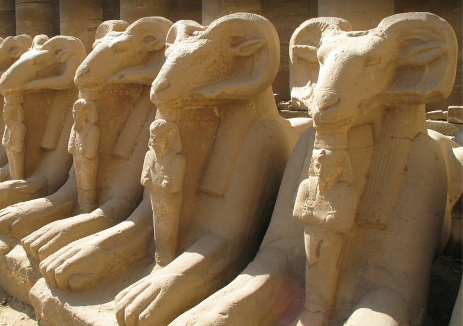
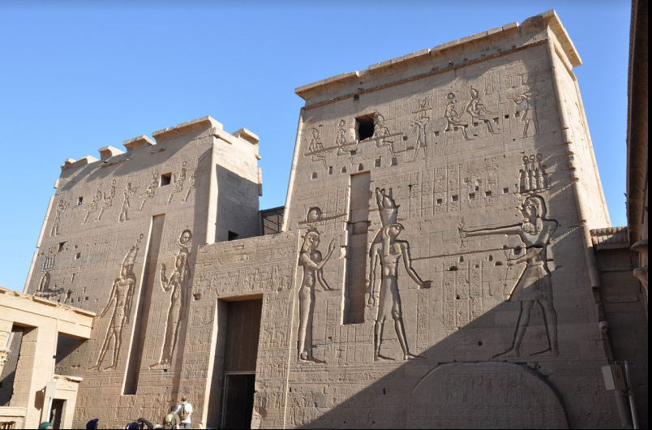
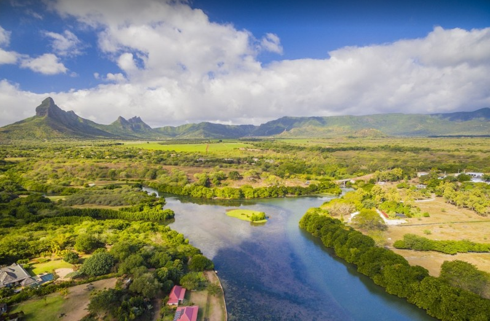
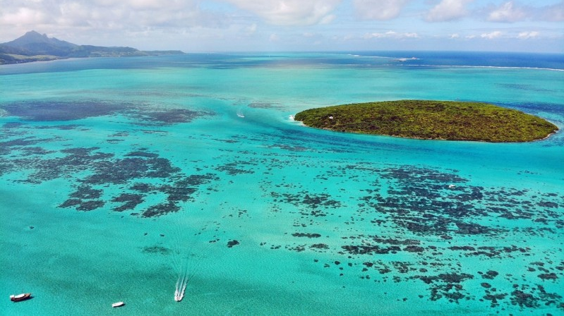
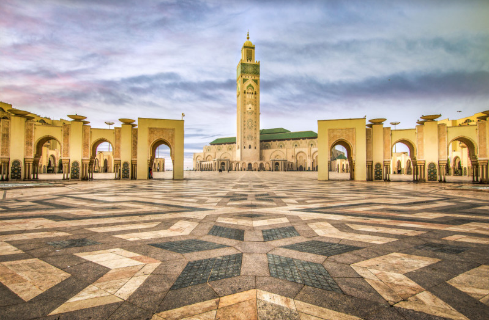
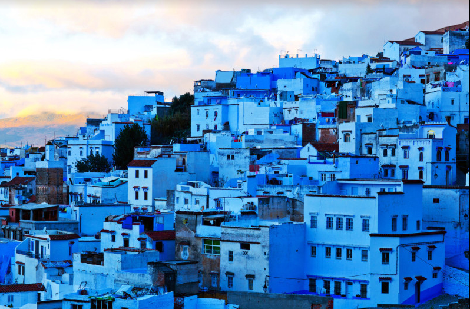

이집트(Egypt)사진
카르나크 신전(천여 년 이상에 걸쳐 만든 사원으로 웅장한 동상, 기둥, 역사상 가장 큰 예배당이 있는 곳)
 룩소르 신전(기원전 14세기의 건축물 중 하나로, 나일강 동쪽 둑에 위치한 고대 이집트 신전)
탄자니아(Tanzania)사진
블랙리버 협곡 국립공원(모리셔스의 야생동물을 만날 수 있는 남서쪽의 국립 공원)
 아이그레테 섬(그랜드 포트 베이에서 가장 큰 규모의 섬으로 석회암으로 형성되어 있는 곳)
모로코(Morocco)사진
카사블랑카(대서양 연안에 있는 모로코 최대의 상업도시)
 아쉐프샤오엔(구시가지의 인상적인 파란색 건물로 유명한 모로코 북서부의 리프 산맥에 있는 도시)